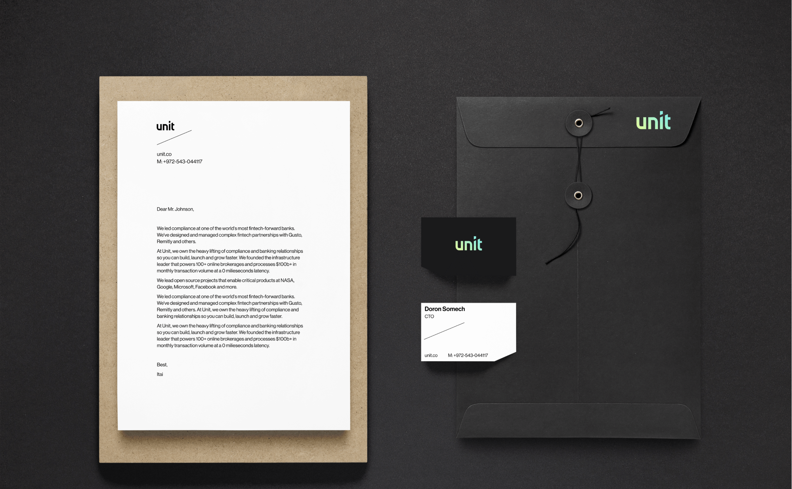
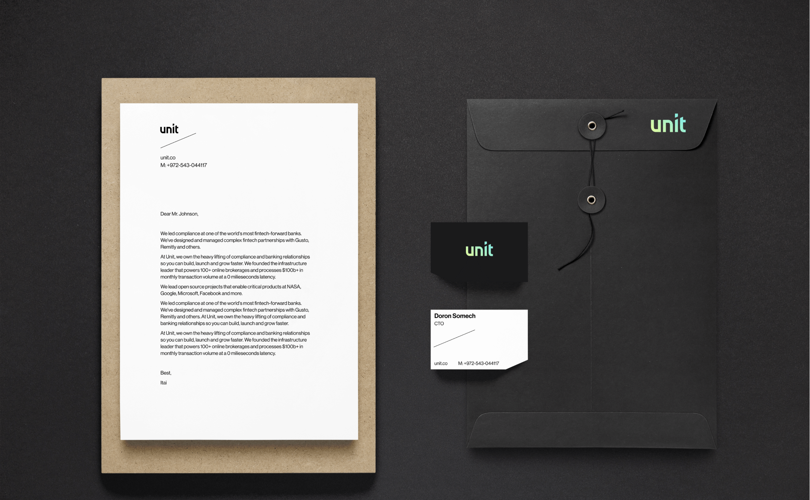
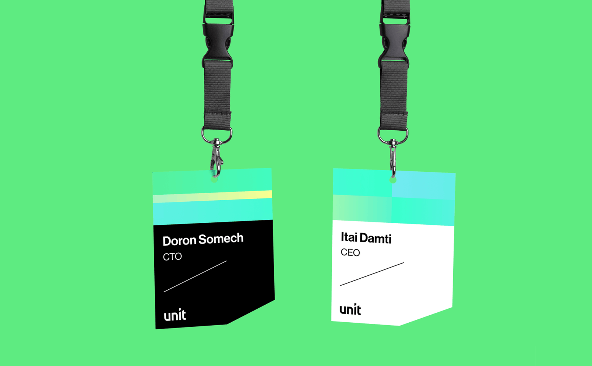
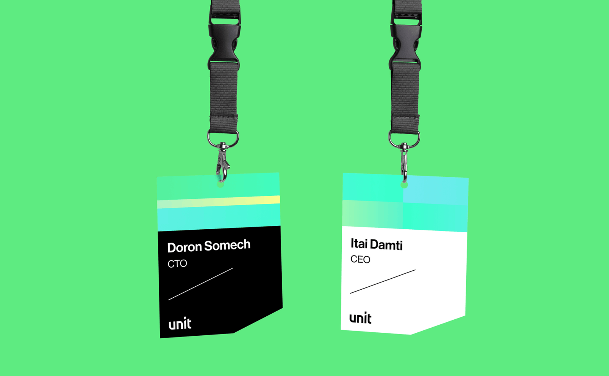

A Brand Sprint & Web design for Unit, a one-stop-shop that radically
simplifies things like Stripe did for payment acceptance. Unit does the
heavy lifting on tech & compliance and exposes modern APIs and docs
to their clients. They isolate their clients from 90% of the daunting
tech & compliance tasks. Their accessible approach helps clients
avoid brain damage and costs that come with bank partnerships.
Client |
Unit
Strategist | Uri Ar
Designer | Anastasia Vlasenko
Art
Director | Inbal Lapidot Vidal


 

 
